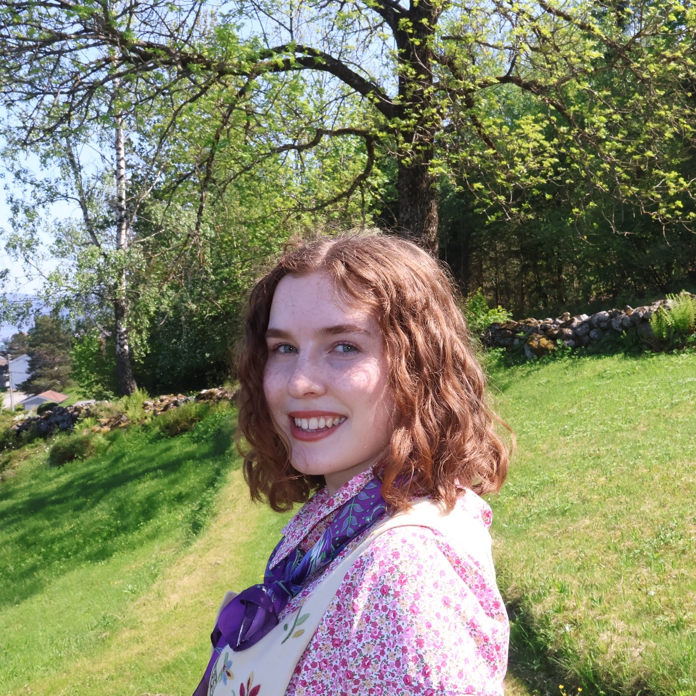

2024–2025
Restaurantmedarbeider
McDonald’s Tromsø
Jobbet med kundeservice, kasse, matproduksjon, renhold og teamarbeid i et hektisk arbeidsmiljø. Utviklet erfaring med ansvar, effektivitet, kommunikasjon og stressmestring.

Digital CV
Informatikkstudent · problemløser
Informatikkstudent med bachelor i biovitenskap og erfaring fra medisin, forskning, helsearbeid, service og kreative prosjekter. Jeg trives spesielt godt med å gjøre kompliserte problemer forståelige.
Arbeid
McDonald’s Tromsø
Jobbet med kundeservice, kasse, matproduksjon, renhold og teamarbeid i et hektisk arbeidsmiljø. Utviklet erfaring med ansvar, effektivitet, kommunikasjon og stressmestring.
Kvarter Helleristningen og Åskollen bo- og servicesenter
Vikar hos hjemmetjenesten Kvarter Helleristningen på Åskollen bo- og servicesenter. Vikar på tilkalling med variabel ukentlig arbeidstid. Arbeidsoppgaver: Pleie og aktivisering av pasienter med demens.
VITA Group AS
Fast stilling 10% som lagermedarbeider og arbeid ved behov. VITA er Norges største kjede innen skjønnhet og velvære. Arbeidsoppgaver: Plukking og pakking av ordre fra nettbutikk.
Nordic Retail Group AS
Ekstrahjelp i perioder med mye pågang og fellesferier. Arbeidsoppgaver: Plukking og pakking av ordre for nettbutikk, pakking av abonnementspakker, komprimering av lager og varetelling. Fast stilling 20% i 2021.
Utdanning
UiT Norges arktiske universitet
Programmering, algoritmer og datastrukturer, operativsystemer, kunstig intelligens og menneske–maskin-interaksjon.
UiT Norges arktiske universitet
Gikk ett og et halvt år på profesjonsstudium i Medisin. Lærte om medisinsk kunnskap, klinisk tenkning, vitenskapelig metode og forståelse av den friske kroppen. Gjennom medisinstudiet dro jeg sommeren 2025 en måned til Florianopolis i Brazil, der deltok jeg på forskningsprosjekt «The study of neuroplasticity as a key factor for future approach of neurodegenerative diseases.».
Universitetet i Oslo
Ferdig våren 2023 etter et utvekslingssemester på University of California Berkeley. Som valgfri fordypningsfag valgte jeg biogeokjemi, molekylærbiologi, humanfysiologi, og bioinformatikk. Dette ga internasjonal studieerfaring og faglig utvikling i et engelskspråklig universitetsmiljø.
Universitetet i Oslo
Fullført et semester i informatikk ved Universitetet i Oslo. Objektorientert programmering og datateknologi.
Mer
IFMSA Research Exchange ved UFSC i Florianópolis i 2025.
Deltok i et prosjekt om nevroplastisitet med laboratoriearbeid
og faglig presentasjon.
Prosjekt: «The
study of neuroplasticity as a key factor for future approach of neurodegenerative
diseases.»
To år som leder i Drammen PRESS (Redd Barna Ungdom) og erfaring som ung kulturarbeider ved Union Scene Drammen.
Ni år med visuell kunst ved Drammen kulturskole. Syr jevnlig og har vunnet publikumsprisen i Symesterskapet i Tromsø.